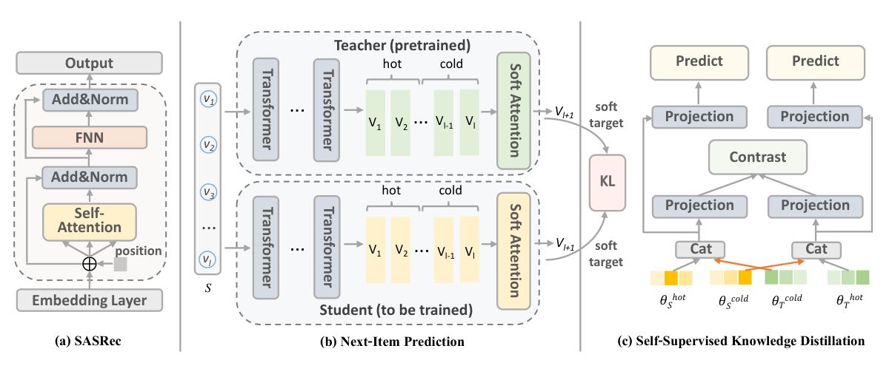

[SIGIR 2022][序列推荐] 用半张量积松弛 TT 分解的维度一致性实现 30 倍嵌入压缩，并以热冷嵌入重组驱动的自监督蒸馏补回容量，全库排序下几乎无损甚至超越教师。
标签：SIGIR · 序列与会话推荐 · 端侧推理/召回 · 张量链分解压缩 · 自监督知识蒸馏 · 长尾物品扶持
SIGIR
序列与会话推荐
端侧推理/召回
张量链分解压缩
自监督知识蒸馏
长尾物品扶持
On-Device Next-Item Recommendation with Self-Supervised Knowledge Distillation (基于自监督知识蒸馏的端侧下一物品推荐)
TL;DR (1分钟核心速览)
端侧推荐的核心矛盾是：Embedding 表占据 99% 参数，既要压到手机能跑，又不能掉点。本文不再沿用"小 TT-rank 硬压"的保守 TTD 路线，而是把半张量积 (STP) 引入张量链分解 (STTD) ，允许核张量维度不一致，把压缩率从 4~8× 推到 30× ；再用师生嵌入重组 (冷/热会话表征互换) 构造对比 + 预测 + 软标签三条自监督蒸馏任务补容量。在 Tmall/RetailRocket 的 Leave-Last-One + Full-Ranking 协议下，压缩学生模型几乎无损，甚至多数指标反超未压缩教师（Tmall P@5：22.47% → 23.46%）。
Background & Motivation (背景与核心矛盾)
主流范式 : 云侧 SASRec/GRU4Rec 类序列模型靠巨大 Embedding 表 + 自注意力堆叠获得表达能力，端侧工作（TT-Rec、LLRec、DeepRec）则用 TTD/剪枝/量化把模型塞进设备。前人局限一（压不下去） : 推荐模型中间层只占小部分参数，剪枝与降维收益微乎其微；TTD 为规避维度一致性约束下的精度崩塌，只敢用 4~8× 压缩率——小 TT-rank 表征不足，大 TT-rank 又失去效率，形成两难。前人局限二（补不回来） : 常规 KD 在推荐上受数据稀疏掣肘；且张量分解相当于在学生 Embedding 层前插入一层线性先验，师生结构差异被拉大 ，知识迁移效果打折；现有 KD 也无法处理长尾物品冷启动。核心洞察 (Key Insight) : TTD 的瓶颈其实是"因子矩阵维度必须相乘一致"这条死约束；若允许任意维度相乘（STP），核张量可在 \(R/n\) 与\(I_kJ_k/n\) 上自由缩放，压缩率提升约\(n^2\) 倍而不损表达。而生物"基因重组"式地交换师生同会话的冷/热表征，恰好给长尾物品一条直达教师知识的旁路 。本文切入点 : STTD 负责"极致压缩"，嵌入重组驱动的自监督蒸馏负责"恢复容量"，二者组成端侧下一物品推荐的完整闭环。
Method (核心方法设计)
1. 整体框架 (Overall Architecture)
教师为云侧预训练 SASRec（含位置嵌入 + 自注意力块 + FFN，但将原始"取末位物品"改为 soft-attention 池化得到会话表征）；学生共享同一骨架，唯一差异是 Embedding 表由 STTD 因子化存储。训练分两步：先冻结教师，再让学生的每个会话裂成 hot/cold 两个子会话分别池化，与教师互换 cold 表征拼成重组表征，同时优化主推荐损失、对比自监督损失、预测自监督损失与软标签蒸馏损失；推理时只需载入 STTD 核张量，逐物品即时重构嵌入并按内积打分。
flowchart TD
A["会话序列 s + 位置嵌入"] --> B["教师 SASRec (未压缩, 冻结)"]
A --> C["学生 SASRec (STTD 压缩嵌入)"]
B --> D["hot/cold 子会话 soft-attention 池化"]
C --> E["hot/cold 子会话 soft-attention 池化"]
D --> F["嵌入重组: 交换 cold 表征"]
E --> F
F --> G["对比任务 + 预测任务 + 软标签 KL"]
G --> H["端侧逐物品重构嵌入 → Full-Ranking"]

图1：所提出框架的概述。
2. 关键设计拆解 (Key Designs)
STTD：松弛维度一致性的半张量积张量链 ：常规 TTD 要求相邻核张量首尾维度严格相等，核张量为 \(R_{k-1}\times I_kJ_k\times R_k\) 。本文改用左半张量积\(\mathbf{A}\ltimes\mathbf{B}\) ，将核张量重塑为\(\hat{\mathbf{G}}_1\in\mathbb{R}^{I_1J_1\times R}\) 、\(\hat{\mathbf{G}}_k\in\mathbb{R}^{\frac{R}{n}\times\frac{I_kJ_k}{n}\times R}\) 、\(\hat{\mathbf{G}}_d\in\mathbb{R}^{\frac{R}{n}\times\frac{I_dJ_d}{n}}\) ，于是\(\mathbf{X}=\hat{\mathbf{G}}_1\ltimes\hat{\mathbf{G}}_2\ltimes\cdots\ltimes\hat{\mathbf{G}}_d\) ，压缩率变为
\(\text{rate}=\frac{\prod_k I_kJ_k}{I_1J_1R+\sum_{k=2}^{d-1}I_kJ_kR^2/n^2+I_dJ_dR/n^2}\) ，
当链长 \(d\) 足够大时约等于原 TTD 的\(n^2\) 倍，例如 2,560,000 参数的表在 TT-rank=8 下由 TTD 的 9,408 压到 2,592（近千倍）。直觉上，STP 把"整块相乘"拆成\(n\) 段分块加权求和，等效于在核张量间插入低秩旁路，容量损失被分摊到多个小核上。嵌入重组 (Embedding Recombination) ：按流行度把前 20% 记为 hot、其余 cold，会话拆为两个子会话并各自 attention 池化得 \(\theta_s^{hot},\theta_s^{cold}\) ；对同一会话交换冷段：\(z_s^{tea}=[\theta_{hot}^{tea},\theta_{cold}^{stu}]\) 、\(z_s^{stu}=[\theta_{hot}^{stu},\theta_{cold}^{tea}]\) 。这样长尾物品表征始终携带教师侧的冷段信息，绕开了师生结构不对称带来的迁移障碍，同时天然构成表征级数据增广。三条蒸馏任务与总目标 ：对比任务用 InfoNCE 拉近重组表征 \(\mathcal{L}_{cl}=-\sum_{s\in\mathcal{B}}\log\frac{\psi(\mathbf{W}_tz_s^{tea},\mathbf{W}_sz_s^{stu})}{\psi(\cdot)+\sum_{j\neq s}\psi(\mathbf{W}_tz_s^{tea},\mathbf{W}_sz_j^{stu})}\) （余弦相似度、\(\tau=0.2\) 、batch 内负采样）；预测任务让双方用重组表征各自拟合真标签；软标签任务用 KL 对齐\(\text{prob}^{tea}\) 与\(\text{prob}^{stu}\) 。最终\(\mathcal{L}=(1-\beta_3)\mathcal{L}_{rec}+\beta_1\mathcal{L}_{cl}+\beta_2\mathcal{L}_{pred}+\beta_3\mathcal{L}_{soft}\) 。推理端免负采样，仅需核张量查表重构 + 内积，100 个会话耗时 0.169s（Tmall）/ 0.081s（RetailRocket），为全部基线中最快。
Experimental Setup & Evaluation Protocol (实验设置与评估协议)
数据集与预处理 : 过滤会话长度 =1 与出现次数 <5 的物品（等价 5-core），训练/测试按"会话最后一条交互为测试"构造，并从训练集随机抽 10% 作验证；再用序列切分扩增样本 \(([v_{s,1}],v_{s,2}),\ldots\) 。
数据集
#Train Sessions
#Test Sessions
#Items
平均长度
场景
Tmall
351,268
25,898
40,728
6.69
电商购物日志
RetailRocket
433,643
15,132
36,968
5.43
电商浏览行为
数据划分与防穿越 : Leave-Last-One（会话级，最后一条交互作测试）+ 训练集内 10% 随机验证，无时间戳泄漏。排名评测协议 : Full-Ranking——对全部 \(|\mathcal{V}|\) 个物品做 softmax 全库排序，非采样排序；指标 P@5/MRR@5/P@10/MRR@10。对比基线与超参 : GRU4Rec、NARM、STAMP、SR-GNN 四类会话推荐 SOTA + 未压缩教师；嵌入维度 \(d=128\) （Tmall）/\(256\) （RetailRocket），batch=100，\(L_2=10^{-5}\) ，Adam lr=0.001，dropout 0.5/0.2；学生取 Stu-1 分解形状，\(R=60,n=2\) （Tmall）、\(R=100,n=2\) （RetailRocket），压缩率 27×/30×。
Key Experimental Results (实验关键数据)
1. 主实验对比 (Main Results)
Method
Tmall P@5
M@5
P@10
M@10
RR P@5
M@5
P@10
M@10
GRU4Rec
16.48
11.92
19.58
12.33
32.37
23.86
39.35
24.67
NARM
16.84
12.34
19.68
12.72
32.94
23.36
39.18
24.19
STAMP
17.45
12.68
22.61
13.12
33.57
23.30
39.75
24.51
SR-GNN
19.39
12.88
23.79
13.46
35.68
24.72
43.31
25.75
Teacher (未压)
22.47
15.75
27.86
16.32
36.51 24.87
43.59 25.79
Stu (27×/30×) 23.46 17.79 25.22 18.03 35.17
26.40 36.81
26.63
Improv. vs SR-GNN
+21.0%
+38.1%
+6.0%
+34.0%
−1.4%
+6.8%
−15.0%
+3.4%
2. 消融实验 (Ablation Study)
变体
说明
结果（相对完整学生模型）
Stu-base
关闭全部自监督蒸馏，仅 STTD
Tmall P@5 下降 16.86%、M@5 降 12.31%、P@10 降 16.35%、M@10 降 12.34%；RetailRocket 分别降 9.53%/3.21%/11.24%/3.58%
Stu-TTD
用常规 TTD 替代 STTD
同等精度下参数量约为 STTD 的 3~4 倍（CR 由 27× 退回 ~8×）
Stu-c（去对比任务）
移除 InfoNCE
小幅下降，长尾表征判别力减弱
Stu-p（去预测任务）
移除重组预测
小幅下降，重组表征与主任务解耦
Stu-s（去软标签）
移除 KL 蒸馏
下降最显著，\(\beta_3\) 最优值（0.8）远大于\(\beta_1,\beta_2\)
长尾分桶
Tmall Popular
Tmall Long-tail
RR Popular
RR Long-tail
Stu-base
5.30
14.93
7.50
24.61
完整 Student
6.03 17.43 7.72 27.45
3. 关键实验发现 (Key Findings)
压缩不只是无损，而是正则化 ：Tmall 上 27× 压缩学生在 P@5（23.46 vs 22.47）、MRR@5（17.79 vs 15.75）、MRR@10（18.03 vs 16.32）全面反超未压缩教师，说明 Transformer 序列推荐模型存在大量参数冗余，STTD 的低秩先验起到了隐式正则作用。蒸馏收益集中在长尾而非头部 ：加入自监督 KD 后，Tmall 长尾桶 P@5 从 14.93 涨到 17.43（+16.7%），头部仅从 5.30 到 6.03（+13.8%），且长尾在整体 P@5 中的占比显著上升——直接验证"冷段师生互换"是给稀疏物品开的知识旁路。超参敏感度呈倒挂关系 ：分解形状与 TT-rank 的影响小于 STP 的 \(n\) ；\(n\) 从 2 增到 4 时 CR 仅从 27× 提到 31×，但 Tmall P@5 从 23.46 掉到 22.20，RetailRocket 更从 33.54 崩到 30.28，说明\(n\) 提升的压缩收益远不抵容量损失，实践中应把\(n\) 锁在 2、改调\(R\) 与张量形状。
Highlights & Limitations (亮点、对比与审稿批判)
与代表作对比 (vs. Prior Work) : 相比 TT-Rec/LLRec 只用 TTD 保守压缩（4~8×）且无蒸馏补偿，本文用 STP 放宽维度一致性把压缩率推到 30×；相比 Ranking Distillation / CD / DE-RRD 只迁移 top-K 或采样物品的排序知识，本文迁移的是表征级 的冷/热分解信息，首次把自监督 KD 引入端侧推荐。可迁移亮点 : (1) "按流行度切分子表征 + 跨模型互换"是一种通用的长尾蒸馏增广算子，可套用到双塔召回或 GNN 推荐；(2) STTD 的"松弛维度一致性换压缩率"思路可复用到任何 Embedding 主导的稠密检索索引压缩。审稿级局限批判 : (1) 教师与学生共享同一骨架，蒸馏收益是否在异构师生（如 GNN 教师 + MLP 学生）下成立未验证，而端侧真实部署往往更偏异构；(2) 实验仅两个电商会话数据集、指标止于 P@K/MRR，缺少 NDCG 与显著性检验，30× 压缩下 RetailRocket 的 P@10 仍比教师低 15%，"几乎无损"的结论对指标选择较敏感；(3) 训练阶段需同时驻留教师与学生，端侧部署虽轻但云端蒸馏开销未量化。
Rating (四维评分)
方法创新性 (Novelty) : ⭐⭐⭐⭐ （STP 松弛 TTD 维度约束 + 冷热嵌入重组的自监督蒸馏，两个机制都有清晰物理直觉且此前未被用于端侧推荐）评估协议与实验扎实度 (Protocol & Experiments) : ⭐⭐⭐⭐ （Full-Ranking 全库排序、两数据集、四类基线、逐任务消融与长尾分桶齐全，但缺少显著性检验与 NDCG 等补充指标）写作与数学规范度 (Clarity & Rigor) : ⭐⭐⭐⭐ （TTD/STP 公式与压缩率推导完整、图表直观；部分符号如 \(\beta\) 系数在 Eq.12 与 Eq.21 间表述略有不一致）工业落地与复现价值 (Industrial & Practical Value) : ⭐⭐⭐⭐⭐ （代码开源、PyTorch Mobile + Android 模拟器实测推理时延、30× 压缩直接对应端侧内存预算，工程参考价值高）